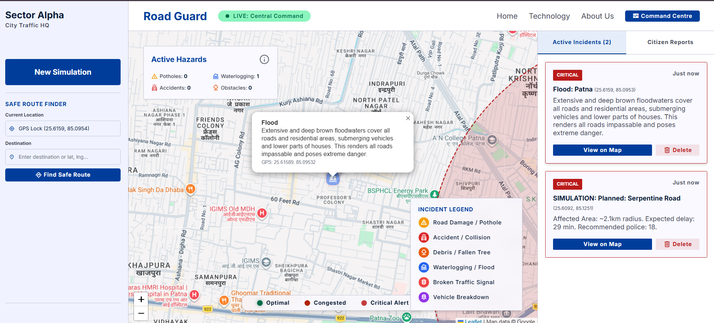
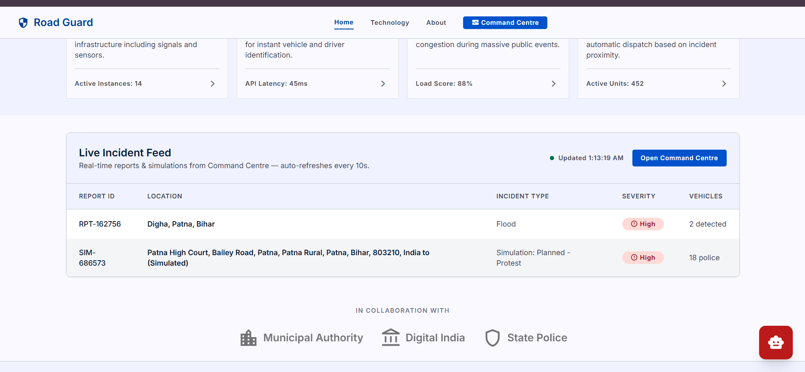

AI-Powered Traffic Intelligence for Smarter Cities
Road Guard is an intelligent traffic management platform that combines Computer Vision, Predictive AI, and real-time analytics to forecast congestion, detect road incidents, and recommend optimal deployment strategies for safer and more efficient urban mobility.

Predict Today. Prevent Tomorrow.
Road Guard is built to help cities move beyond traditional traffic monitoring. By integrating computer vision, machine learning, and predictive intelligence, our platform forecasts congestion before it occurs, enabling smarter deployment of traffic personnel, effective diversion planning, and faster emergency response during both planned and unplanned events.
The Road Guard Pillars
Foundation of our operational excellence
Local Expertise
Architected specifically for the unique dynamics of Indian roads. From navigating complex chowks to managing a diverse vehicle mix of rickshaws, trucks, and commuters.
Proactive Safety
Moving beyond incident response. Our AI identifies high-risk patterns in real-time, allowing for preemptive safety interventions that save lives.
Transparency
Building public trust through verifiable data and citizen-centric reporting. Every decision is backed by empirical evidence that is accessible to stakeholders.
From Reactive Traffic Control to Predictive Intelligence
Road Guard transforms traffic management by forecasting congestion before it occurs. By combining live traffic feeds, historical patterns, and AI-powered incident analysis, we help authorities deploy the right resources at the right place and the right time.
Supporting Smarter Traffic Management
Road Guard empowers traffic authorities with AI-driven situational awareness by integrating live camera analytics, citizen-reported incidents, and event-based congestion forecasting. Instead of reacting after congestion forms, the platform helps officials anticipate disruptions, deploy resources effectively, and maintain smoother traffic flow across the city.
-
check_circle
Unified Traffic Intelligence Combines multiple data sources into a single operational dashboard.
-
check_circle
Actionable Recommendations Provides intelligent suggestions for manpower allocation, barricading, and alternate route planning.
